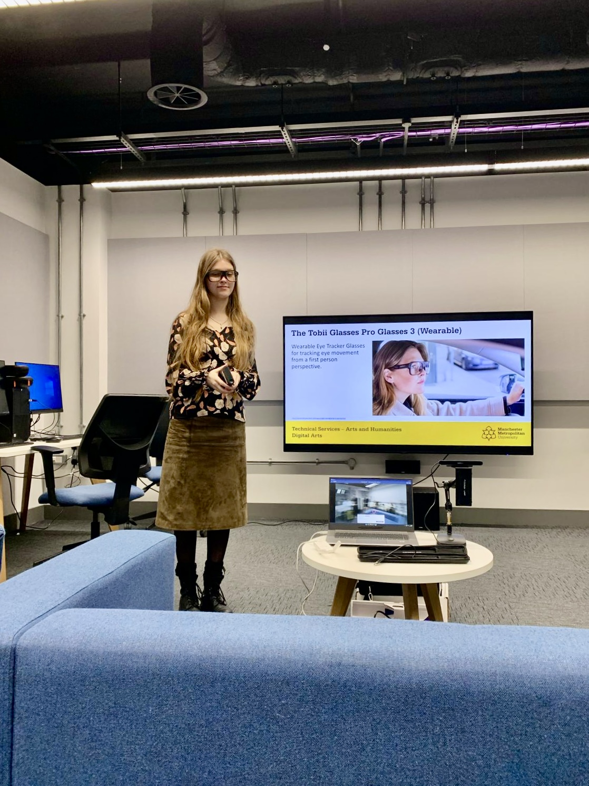
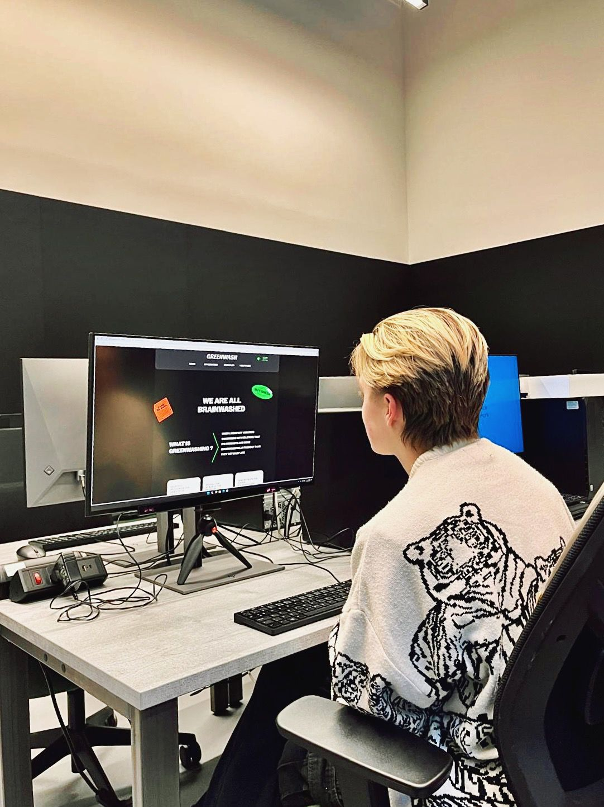

Greenwashing Platform Redesign
Self-directed project on Greenwash.com, focused on addressing the problem of companies exaggerating their sustainability claims and helping users recognize misleading eco-friendly marketing.

MY APPROACH
Research how eye-tracking can shape a smarter redesign.
○ Issue identification- pinpointed confusing and outdated information that hurt user trust.
○ Interactive Learning - added quizzes (requested by 21.43% of users) to boost engagement
○ Behavioral Impact - designed experiences that encourage meaningful climate action
RESEARCH
Persona
Emma Green is a marketing manager from Prague that enjoys living sustainably. She is careful about her choices and seeks brands she can genuinely trust.

DESIGN DECISIONS & SUSTAINABILITY
Every choice aimed to build trust
I made navigation easier by simplifying the sitemap. I also made learning more engaging with quizzes and visuals. Additionally, I built trust through clear dates and verifiable information.
TESTING
Eye-tracking + think out load, revealed the unseen
The goal of this test was to understand how users interact with navigation elements like labeling and content grouping.

Method
Sessions were recorded, and audio was reviewed to identify key notes aligned with task questions. Thematic analysis helped identify recurring behaviors and patterns, while affinity Mapping visually grouped feedback to show emerging themes. To make sure all user perspectives were included colour-coded by persona.